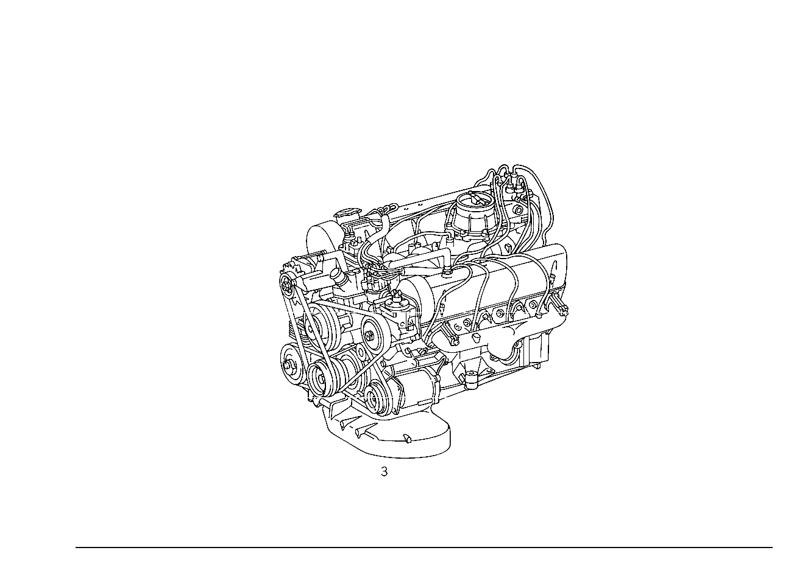

| № | Артикул | Название | Кол. | Примечание | Ограничение |
|---|---|---|---|---|---|
| 3 | A 116 010 39 02 | МОТОР | 1 | LESS STARTING MOTOR Рулевое управление: Влево Z 12.468/04 [004] НЕ ДЛЯ ОБРАТН.ПЕРЕОБОРУД. И А/М С КАТАЛИЗАТ. | |
| 3 | A 116 010 39 02 | МОТОР | 1 | для /06/07/08 ENGINES, SEE STANDARD VERSION Z 12.468/04 | |
| 3 | A 116 010 59 02 | МОТОР | 1 | Рулевое управление: Влево Z 12.468/23 | |
| 6 | N 000908 022010 | Резьбовая пробка | 1 | Z 12.468/03, Z 12.468/04 | |
| 9 | A 116 051 70 01 | РАСПРЕДВАЛ | 1 | СЛЕВА Z 12.468/03, Z 12.468/04 | |
| 9 | A 116 051 71 01 | РАСПРЕДВАЛ | 1 | СПРАВА Z 12.468/03, Z 12.468/04 | |
| 12 | A 000 994 11 48 | ПРЕДОХРАНИТЕЛЬ | - | Z 12.468/04 | |
| 12 | N 912007 009001 | Зажим | 1 | CONTROL LEVER TO CABLE BRACKET Z 12.468/04 [402] БОЛЬШЕ НЕ ПОСТАВЛЯЕТСЯ | |
| 15 | A 117 070 14 21 | РЫЧАГ | 1 | ПОВОРОТНЫЙ РЫЧАГ Z 12.468/04 [402] БОЛЬШЕ НЕ ПОСТАВЛЯЕТСЯ | |
| 15 | A 117 070 16 21 | РЫЧАГ | 1 | РЫЧАГ РЕГУЛИРВОЧНЫЙ Z 12.468/04 | |
| 19 | A 014 094 50 02 | ВОЗДУШНЫЙ ФИЛЬТР | 1 | Z 12.468/04 | |
| 19 | A 014 094 50 02 | ВОЗДУШНЫЙ ФИЛЬТР | 1 | MANN & HUMMEL Z 12.468/23 | |
| 27 | A 001 094 78 04 | - Фил. элемент возд.фильтра | 1 | Z 12.468/03, Z 12.468/04 | |
| 27 | A 001 094 78 04 | - Фил. элемент возд.фильтра | 1 | Z 12.468/21, Z 12.468/22, Z 12.468/23, Z 12.468/24 | |
| 31 | A 002 094 46 04 | - ЭЛЕМЕНТ ФИЛЬТРУЮЩИЙ | 1 | Z 12.468/03, Z 12.468/04 | |
| 31 | A 002 094 46 04 | - ЭЛЕМЕНТ ФИЛЬТРУЮЩИЙ | 1 | Z 12.468/21, Z 12.468/22, Z 12.468/23, Z 12.468/24 | |
| 40 | A 001 094 22 80 | - ПРОКЛАДКА УПЛОТНИТЕЛЬНАЯ | 1 | Z 12.468/03, Z 12.468/04 | |
| 40 | A 001 094 22 80 | - ПРОКЛАДКА УПЛОТНИТЕЛЬНАЯ | 1 | Z 12.468/21, Z 12.468/22, Z 12.468/23, Z 12.468/24 | |
| 41 | A 000 094 12 60 | - УПЛОТНИТ. КОЛЬЦО | - | Z 12.468/03, Z 12.468/04 | |
| 41 | A 001 094 95 80 | - уплотнение | 1 | Z 12.468/03, Z 12.468/04 [402] БОЛЬШЕ НЕ ПОСТАВЛЯЕТСЯ | |
| 41 | A 000 094 12 60 | - УПЛОТНИТ. КОЛЬЦО | - | Z 12.468/21, Z 12.468/22, Z 12.468/23, Z 12.468/24 | |
| 41 | A 001 094 95 80 | - уплотнение | 1 | Z 12.468/21, Z 12.468/22, Z 12.468/23, Z 12.468/24 [402] БОЛЬШЕ НЕ ПОСТАВЛЯЕТСЯ | |
| 42 | A 000 094 19 55 | - Крышка | 6 | Z 12.468/03, Z 12.468/04 | |
| 42 | A 000 094 19 55 | - Крышка | 6 | Z 12.468/21, Z 12.468/22, Z 12.468/23, Z 12.468/24 | |
| 43 | A 000 990 07 62 | - ГАЙКА | - | Z 12.468/04 | |
| 43 | A 000 990 17 62 | - ГАЙКА | - | Z 12.468/04 | |
| 43 | A 000 990 09 62 | - гайка | 1 | Z 12.468/04 | |
| 43 | A 000 990 07 62 | - ГАЙКА | - | Z 12.468/21, Z 12.468/22, Z 12.468/23, Z 12.468/24 | |
| 43 | A 000 990 17 62 | - ГАЙКА | - | Z 12.468/21, Z 12.468/22, Z 12.468/23, Z 12.468/24 | |
| 43 | A 000 990 09 62 | - гайка | 1 | Z 12.468/21, Z 12.468/22, Z 12.468/23, Z 12.468/24 | |
| 44 | A 001 990 09 36 | - БОЛТ | 2 | TO 014 094 50 02 Z 12.468/04 | |
| 44 | A 001 990 09 36 | - БОЛТ | 2 | Z 12.468/21, Z 12.468/22, Z 12.468/23, Z 12.468/24 | |
| 45 | A 123 584 93 21 | - Информационная табличка | - | Z 12.468/03, Z 12.468/04 | |
| 45 | A 210 584 00 47 | - Предупреждающая табличка | 1 | Z 12.468/03, Z 12.468/04 | |
| 45 | A 123 584 93 21 | - Информационная табличка | - | Z 12.468/21, Z 12.468/22, Z 12.468/23, Z 12.468/24 | |
| 45 | A 210 584 00 47 | - Предупреждающая табличка | 1 | "ОПАСНО ДЛЯ ЖИЗНИ! ВЫСОКОЕ НАПРЯЖЕНИЕ"; ПО\-НЕМЕЦКИ, АНГЛИЙСКИ И ФРАНЦУЗСКИ Z 12.468/21, Z 12.468/22, Z 12.468/23, Z 12.468/24 | |
| 47 | A 116 140 58 14 | ВЫПУСКНОЙ КОЛЛЕКТОР | 1 | ЦИЛИНДР NOS.:1\-4 Z 12.468/23 | |
| 51 | A 116 140 56 14 | ВЫПУСКНОЙ КОЛЛЕКТОР | 1 | ЦИЛИНДР NOS.:5\-8 Z 12.468/23 | |
| 53 | A 117 997 10 72 | - ШТУЦЕР | 2 | Z 12.468/21, Z 12.468/22, Z 12.468/23, Z 12.468/24 | |
| 55 | A 000 140 33 60 | КЛАПАН | 1 | (THERMOVALVE),OPENING AT 40 DEGREES; ON INTAKE MANIFOLD UPPER PART Z 12.468/03, Z 12.468/04 | |
| 55 | N 007603 012120 | - Уплотнительное кольцо | 2 | Z 12.468/21, Z 12.468/22, Z 12.468/23, Z 12.468/24 | |
| 57 | N 007604 010106 | Резьбовая пробка | 1 | ВЕРХН.ЧАСТЬ ВПУСКН.КОЛЛЕКТОРА Z 12.468/03, Z 12.468/04 | |
| 61 | A 117 140 32 12 | ТРУБОПРОВОД | 1 | ВЫПУСКН. КОЛЛЕКТОР, СЛЕВА Z 12.468/23, Z 12.468/24 | |
| 63 | A 117 140 33 12 | ТРУБОПРОВОД | 1 | ВЫПУСКН. КОЛЛЕКТОР, СПРАВА Z 12.468/23, Z 12.468/24 | |
| 65 | N 003861 008006 | Врезное кольцо | 2 | Z 12.468/21, Z 12.468/22, Z 12.468/23, Z 12.468/24 | |
| 67 | A 117 990 02 54 | ГАЙКА | 2 | Z 12.468/21, Z 12.468/22, Z 12.468/23, Z 12.468/24 [402] БОЛЬШЕ НЕ ПОСТАВЛЯЕТСЯ | |
| 71 | A 117 987 00 45 | Колпачок | 2 | ТРУБОПРОВОД Z 12.468/21, Z 12.468/22, Z 12.468/23, Z 12.468/24 | |
| 75 | N 916026 010000 | Хомут | - | Z 12.468/21, Z 12.468/22, Z 12.468/23, Z 12.468/24 | |
| 75 | A 000 995 35 07 | Хомут | 2 | ТРУБОПРОВОД; 12\-22 MM Z 12.468/21, Z 12.468/22, Z 12.468/23, Z 12.468/24 | |
| 83 | N 000933 008145 | Винт | 2 | ТРУБОПР.НА ГБЦ; M8 X 18 Z 12.468/23, Z 12.468/24 | |
| 83 | N 000933 008168 | Винт | 2 | ТРУБОПР.НА ГБЦ Z 12.468/23, Z 12.468/24 | |
| 87 | A 615 991 01 40 | РАСПОРН. ТРУБКА | 2 | ТРУБОПР.НА ГБЦ Z 12.468/23, Z 12.468/24 | |
| 120 | A 000 140 08 85 | НАСОС | - | Z 12.468/03, Z 12.468/04 | |
| 120 | A 116 140 07 85 | НАСОС | - | Z 12.468/03, Z 12.468/04 [009] ИСПОЛЬЗОВАТЬ СТАРЫЙ НОМЕР ДЕТАЛИ ДО ДВИГАТЕЛЯ 116.964 000248 116.965 008547 | |
| 120 | A 116 140 08 85 | НАСОС | - | Z 12.468/03, Z 12.468/04 | |
| 120 | A 116 140 12 85 | НАСОС | 1 | ВОЗДУХ Z 12.468/03, Z 12.468/04 | |
| 135 | A 116 140 01 88 | СЦЕПЛЕНИЕ | 1 | ЭЛ. МАГН. МУФТА Z 12.468/03, Z 12.468/04 [402] БОЛЬШЕ НЕ ПОСТАВЛЯЕТСЯ | |
| 135 | A 116 141 04 88 | Магнит | 1 | ЭЛ. МАГН. МУФТА Z 12.468/03, Z 12.468/04 | |
| 150 | A 008 545 18 28 | - ШТИФТ ШТЕКЕРА | - | Z 12.468/03, Z 12.468/04 | |
| 150 | A 013 545 79 28 | - Штекерный штифт | 2 | 4.0mm2 Z 12.468/03, Z 12.468/04 | |
| 165 | A 008 545 09 28 | - Корпус штекера | 1 | 2\-PIN Z 12.468/03, Z 12.468/04 | |
| 180 | A 008 545 11 28 | - Крышка | 1 | 2\-PIN RK4. Z 12.468/03, Z 12.468/04 | |
| 195 | N 000933 005058 | Винт | 3 | СЦЕПЛ.НА НАСОСЕ Z 12.468/03, Z 12.468/04 | |
| 197 | A 116 994 00 41 | ПРЕДОХРАНИТЕЛЬ | - | Z 12.468/03, Z 12.468/04 | |
| 197 | A 119 994 02 41 | предохранитель | 1 | СЦЕПЛ.НА НАСОСЕ Z 12.468/03, Z 12.468/04 | |
| 219 | A 116 140 02 44 | ФЛАНЕЦ | - | Z 12.468/03, Z 12.468/04 | |
| 219 | A 116 140 06 86 | ШКИВ | - | Z 12.468/03, Z 12.468/04 | |
| 219 | A 116 140 14 86 | ШКИВ | 1 | (РОТОР) Z 12.468/03, Z 12.468/04 [417] БОЛЬШЕ НЕ ПОСТАВЛЯЕТСЯ, ЗАКАЗЫВАТЬ КОМПЛЕКТ ПОСТАВКИ | |
| 219 | A 116 140 13 86 | Комплект ременного шкива | 1 | Z 12.468/03, Z 12.468/04 | |
| 225 | A 000 981 93 27 | - РАД.-УПОРН. ПОДШИПНИК | 1 | (ЗУБЧАТ.СЕГМЕНТ) Z 12.468/03, Z 12.468/04 | |
| 234 | N 000472 035000 | - Стопорное кольцо | 1 | Z 12.468/03, Z 12.468/04 | |
| 237 | A 116 140 03 84 | ПОВОДОК | 1 | Z 12.468/03, Z 12.468/04 | |
| 240 | A 116 994 01 41 | ПРЕДОХРАНИТЕЛЬ | - | Z 12.468/03, Z 12.468/04 | |
| 240 | A 119 994 01 41 | предохранитель | 1 | Z 12.468/03, Z 12.468/04 | |
| 243 | A 116 142 01 53 | РАСПОРН. ТРУБКА | 1 | СЦЕПЛ.НА НАСОСЕ Z 12.468/03, Z 12.468/04 [402] БОЛЬШЕ НЕ ПОСТАВЛЯЕТСЯ | |
| 261 | A 116 142 01 76 | ШАЙБА | 1 | СЦЕПЛ.НА НАСОСЕ Z 12.468/03, Z 12.468/04 [402] БОЛЬШЕ НЕ ПОСТАВЛЯЕТСЯ | |
| 270 | N 000137 014201 | Пружинная шайба | 1 | СЦЕПЛ.НА НАСОСЕ Z 12.468/03, Z 12.468/04 | |
| 279 | N 000439 014206 | Гайка | 1 | СЦЕПЛ.НА НАСОСЕ Z 12.468/03, Z 12.468/04 | |
| 288 | A 117 140 05 40 | ДЕРЖАТЕЛЬ | 1 | ВОЗДУШНЫЙ НАСОС Z 12.468/03, Z 12.468/04 | |
| 297 | A 116 141 00 84 | - ВКЛАДКА | - | Z 12.468/03, Z 12.468/04 | |
| 297 | A 116 141 01 84 | - ВКЛАДКА | 1 | Z 12.468/03, Z 12.468/04 | |
| 306 | A 116 141 00 27 | - РЕЙКА ЗУБЧАТАЯ | 1 | Z 12.468/03, Z 12.468/04 [402] БОЛЬШЕ НЕ ПОСТАВЛЯЕТСЯ | |
| 315 | N 001476 004011 | - Просечной штифт | 2 | Z 12.468/03, Z 12.468/04 | |
| 324 | N 000931 008326 | Винт | - | Z 12.468/03, Z 12.468/04 | |
| 324 | N 304014 008009 | Винт с 6-гранной головкой | 2 | КРОНШТ.ВОЗДУШ.НАСОСА НА БЛОКЕ ЦИЛ. Z 12.468/03, Z 12.468/04 | |
| 333 | N 000125 008418 | Шайба | - | Z 12.468/03, Z 12.468/04 | |
| 333 | N 000125 008443 | Шайба | 2 | КРОНШТ.ВОЗДУШ.НАСОСА НА БЛОКЕ ЦИЛ.; 8 MM Z 12.468/03, Z 12.468/04 | |
| 342 | N 000931 008266 | Винт | 1 | КРОНШТ.ВОЗДУШ.НАСОСА НА БЛОКЕ ЦИЛ. Z 12.468/04 | |
| 351 | N 007349 008002 | Шайба | 1 | КРОНШТ.ВОЗДУШ.НАСОСА НА БЛОКЕ ЦИЛ. Z 12.468/04 | |
| 355 | N 000125 006421 | Шайба | 2 | КРОНШТ.ВОЗДУШ.НАСОСА НА БЛОКЕ ЦИЛ. Z 12.468/03, Z 12.468/04 | |
| 355 | N 000125 006449 | Шайба | 2 | КРОНШТ.ВОЗДУШ.НАСОСА НА БЛОКЕ ЦИЛ. Z 12.468/03, Z 12.468/04 | |
| 360 | N 000933 006083 | Винт | 2 | КРОНШТ.ВОЗДУШ.НАСОСА НА БЛОКЕ ЦИЛ. Z 12.468/03, Z 12.468/04 | |
| 369 | N 007984 008047 | Винт | 1 | ВОЗДУШ. НАСОС НА КРОНШТЕЙН Z 12.468/03, Z 12.468/04 | |
| 378 | N 000137 008204 | Пружинная шайба | - | Z 12.468/03, Z 12.468/04 | |
| 378 | N 000137 008212 | Пружинная шайба | 2 | ВОЗДУШ. НАСОС НА КРОНШТЕЙН Z 12.468/03, Z 12.468/04 | |
| 387 | A 102 234 00 25 | Шестерня | 1 | ВОЗДУШ. НАСОС НА КРОНШТЕЙН Z 12.468/03, Z 12.468/04 | |
| 396 | N 000931 008246 | Винт | - | Z 12.468/03, Z 12.468/04 | |
| 396 | N 304017 008028 | Винт с 6-гранной головкой | 1 | ВОЗДУШ. НАСОС НА КРОНШТЕЙН Z 12.468/03, Z 12.468/04 | |
| 400 | A 006 997 24 92 | РЕМЕНЬ КЛИНОВОЙ | 1 | ВОЗДУШНЫЙ НАСОС 9.5 X 750 Z 12.468/03, Z 12.468/04 | |
| 405 | N 916016 040202 | Хомут | 1 | ШЛАНГ ОЖ НА ДЕРЖАТЕЛЕ КОМПРЕССОРА Z 12.468/03, Z 12.468/04 | |
| 414 | N 000912 006097 | Винт | - | Z 12.468/03, Z 12.468/04 | |
| 414 | N 000912 006066 | Винт | 1 | ШЛАНГ ОЖ НА ДЕРЖАТЕЛЕ КОМПРЕССОРА; M6X15 Z 12.468/03, Z 12.468/04 | |
| 423 | N 000137 006204 | Пружинная шайба | 1 | ШЛАНГ ОЖ НА ДЕРЖАТЕЛЕ КОМПРЕССОРА Z 12.468/03, Z 12.468/04 | |
| 432 | A 116 090 03 82 | ШЛАНГ | 1 | ВОЗДУШ.ФИЛЬТР К ВОЗДУШ.НАСОСУ Z 12.468/03, Z 12.468/04 | |
| 450 | A 116 141 00 21 | ЭКРАН | 1 | ВПУСКН. И НАПОРН.ШТУЦЕР КОМПРЕССОРА TO 000 140 08 85, Z 12.468/03, Z 12.468/04 [402] БОЛЬШЕ НЕ ПОСТАВЛЯЕТСЯ | |
| 459 | A 001 997 43 90 | Кабельная стяжка | 1 | ФОРМ.ШЛАНГ НА ДЕРЖАТ. ГЕНЕРАТОРА; 9X250 MM Z 12.468/03, Z 12.468/04 | |
| 468 | A 000 140 77 60 | Клапан | 1 | КЛАПАН ОТКЛЮЧЕНИЯ Z 12.468/03, Z 12.468/04 | |
| 477 | A 116 094 14 82 | ШЛАНГ | 1 | ВОЗДУШ.НАСОС К ОТКЛЮЧ.КЛАПАНУ Z 12.468/04 | |
| 486 | A 110 997 02 90 | СОЕДИНИТЕЛЬНЫЙ ЭЛЕМЕНТ | 1 | ВОЗДУШ.НАСОС К ОТКЛЮЧ.КЛАПАНУ Z 12.468/03, Z 12.468/04 | |
| 495 | N 916026 023001 | Хомут | 1 | ВОЗДУШ.НАСОС К ОТКЛЮЧ.КЛАПАНУ; 23\-30 MM Z 12.468/03, Z 12.468/04 | |
| 513 | A 000 140 78 60 | Клапан | 1 | ОБРАТНЫЙ КЛАПАН Z 12.468/03, Z 12.468/04 | |
| 522 | N 007603 022104 | Уплотнительное кольцо | 1 | ОБРАТНЫЙ КЛАПАН Z 12.468/03, Z 12.468/04 | |
| 531 | A 116 094 16 82 | ШЛАНГ | 1 | ОТКЛЮЧ.КЛАПАН К ОБРАТН.КЛАПАНУ Z 12.468/04 | |
| 540 | A 110 997 02 90 | СОЕДИНИТЕЛЬНЫЙ ЭЛЕМЕНТ | 2 | ОТКЛЮЧ.КЛАПАН К ОБРАТН.КЛАПАНУ Z 12.468/03, Z 12.468/04 | |
| 555 | A 000 987 11 45 | Защитный колпачок | 2 | СОЕДИНЕНИЕ ПАТРУБКА ЗАСЛОНКИ Z 12.468/03, Z 12.468/04 | |
| 562 | A 117 078 06 81 | Шланг | 1 | ОБРАТН. КЛАПАН НА ВПУСКН. КОЛЛЕКТОРЕ Z 12.468/03, Z 12.468/04 | |
| 569 | A 116 800 03 78 | Обратный клапан | - | Z 12.468/03, Z 12.468/04 | |
| 569 | A 001 140 66 60 | Клапан | 1 | ОБРАТНЫЙ КЛАПАН Z 12.468/03, Z 12.468/04 | |
| 569 | A 001 140 17 60 | КЛАПАН | 1 | ОБРАТНЫЙ КЛАПАН Z 12.468/03, Z 12.468/04 | |
| 576 | A 000 158 91 35 | Вакуумный трубопровод | 0 | Z 12.468/01, Z 12.468/02, Z 12.468/03, Z 12.468/04, Z 12.468/06, Z 12.468/07, Z 12.468/08 [404] ЗАКАЗЫВАТЬ ПОГОННЫМИ МЕТРАМИ | |
| 576 | A 000 158 91 35 | Вакуумный трубопровод | 1 | ОБРАТН. КЛАПАН К ЭЛ. ПЕРЕКЛ. КЛАПАНУ 500mm Z 12.468/04 | |
| 583 | A 117 078 05 81 | Шланг | 2 | ОБРАТН. КЛАПАН К ЭЛ. ПЕРЕКЛ. КЛАПАНУ Z 12.468/04 | |
| 597 | A 117 997 09 82 | Шланг | 1 | ПЕРЕКЛЮЧАЮЩИЙ ЭЛЕКТРОКЛАПАН ПРОДУВКИ КАТАЛИЗАТОРА 40 MM; 8X3.5 MM Z 12.468/04 [404] ЗАКАЗЫВАТЬ ПОГОННЫМИ МЕТРАМИ | |
| 604 | A 000 158 99 35 | Вакуумный трубопровод | 0 | Z 12.468/01, Z 12.468/02, Z 12.468/03, Z 12.468/04, Z 12.468/06, Z 12.468/07, Z 12.468/08 [404] ЗАКАЗЫВАТЬ ПОГОННЫМИ МЕТРАМИ | |
| 604 | A 000 158 99 35 | Вакуумный трубопровод | 1 | ЭЛ.ПЕРЕКЛЮЧ.КЛАПАН К КЛАПАНУ ОТКЛЮЧ.ВОЗДУХА 1100 MM Z 12.468/04 | |
| 611 | A 117 078 05 81 | Шланг | 1 | ЭЛ.ПЕРЕКЛЮЧ.КЛАПАН К КЛАПАНУ ОТКЛЮЧ.ВОЗДУХА Z 12.468/03, Z 12.468/04 |
Позиций: 126 · подписано на схемах: 126 · колесо — плавный зум в курсор, перетаскивание — пан, двойной клик — зум, клик по артикулу — скопировать.